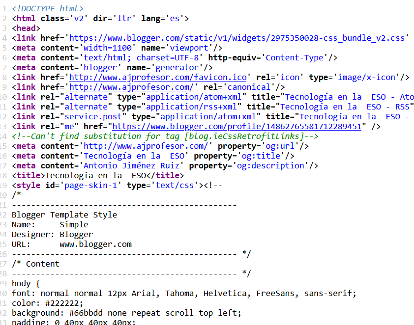

 De nuevo volvemos a vernos y estoy muy contento de poder compartir este documento con vosotras y vosotros.
¿Qué te parece la imagen de la derecha? Estoy de acuerdo, es un verdadero galimatías. Bien, sobre esto va nuestro reto.
Ya que estás aquí, aprovecho para transmitirte una gran noticia. El equipo Community Manager de tu centro te ha pedido incluir una página web del trabajo que has realizado en nuestra materia dentro de la página oficial del instituto.
Me parece una gran oportunidad para aprender a crear una página web y poder compartir lo que has hecho DURANTE EL CURSO. Se trata de hacer una página web sobre lo que más te ha gustado de nuestra materia.
Las posibilidades son infinitas, seguro que vas a disfrutar realizando este trabajo.
¡Ha llegado el momento de convertirte en un desarrollador web!
Definición:
Persona encargada de gestionar la imagen de una empresa o persona en las redes sociales.
Ejemplo:
Cuando una empresa nos contesta a un twitter, lo hace un community manager.
Definición:
Persona especializada en el desarrollo y mantenimiento de páginas web.
Ejemplo:
La aplicación que estás utilizando ahora, la ha creado un desarrollador web.